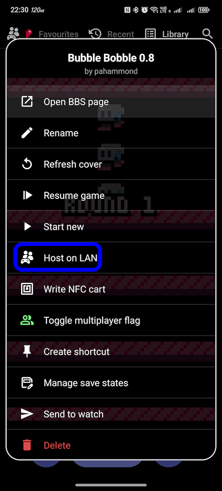
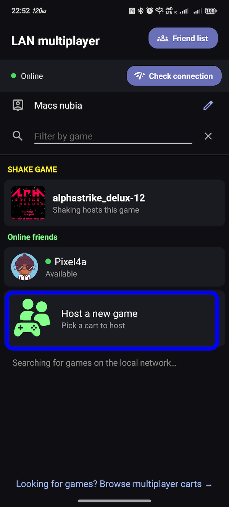
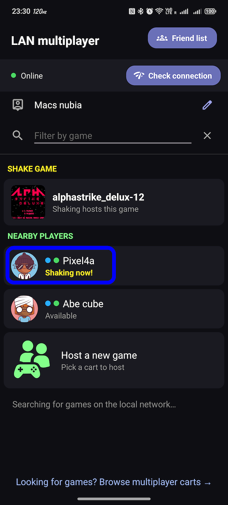
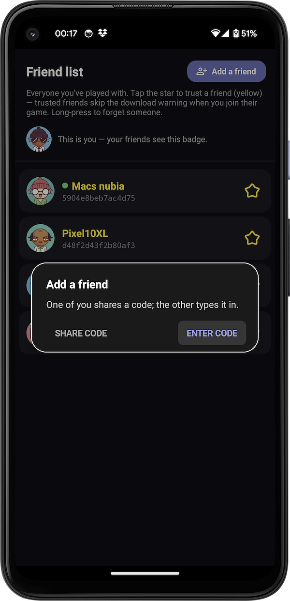
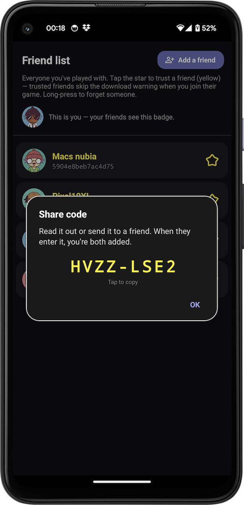
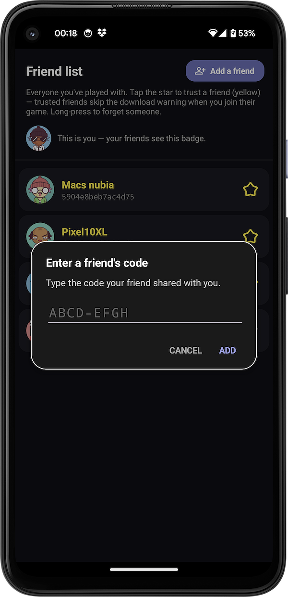

Playing multiplayer
Two players, one cart — over the same Wi-Fi, a direct link between two phones, or online
Pixl8 lets two people play the same PICO-8 cart together in real time — one of you hosts, the other joins, and you both share control (a Player 1 and a Player 2). It works with carts that read a second player's controls; Pixl8 marks those with a small two-player badge in your library, and warns you before you invite someone to a single-player game.
There's more on connection quality and the online limits in the FAQ. This page is the hands-on version.
PRO Hosting a game is a Pro feature. Joining a game someone else hosts is free for everyone — so one person with Pro can host, and a friend without it can join and play.
Starting a game
The quickest way — long-press & host
Long-press any cart in your library and pick "Host on LAN". That drops you straight into the waiting room for that game, ready for a second player on the same Wi-Fi to join — no extra steps.

From the multiplayer lobby
Tap the multiplayer icon at the top of your library to open the lobby. From here you can host a new game (pick which cart to host), or join a game someone nearby is hosting — their rooms show up in the list as they appear. This is also where you'll see friends who are online and players nearby.

Shake to connect — two phones side by side
If you're both looking at the multiplayer lobby, just shake the two phones at the same time. Pixl8 notices you both, pairs you up, and starts the game together — no room list, no codes. It's the fastest way to get a quick game going when you're in the same room.

Playing with a friend online
To play with someone who isn't in the room with you, you first add them as a friend. After that, you can invite each other to play online (over Wi-Fi — see the FAQ for what to expect from internet play). There are two ways to add a friend.
See someone nearby
When you and someone else both have the LAN multiplayer screen open near each other, you'll show up in each other's list automatically. Tap them, pick a game to play together, and an invitation is sent; if they accept, the game starts and you're added as friends, so next time you can play online from anywhere.
Add by code
Not in the same place? Open your friends list and choose Add a friend. One of you shares a short code; the other types it in. That's it — you're friends, and can invite each other to play from anywhere.

Device A & Device B

Device A

Device B
Inviting a friend to play
Once you have a list of friends, any who are online show up in the lobby with a green dot. Tap one, choose a game to play, and an invitation is sent. When they accept, the game starts for both of you.
One more time on the essentials: it's two players, local play (same Wi-Fi or a direct link) is the smoothest, online is more experimental and needs Wi-Fi on both sides (no mobile data). The FAQ covers the why.